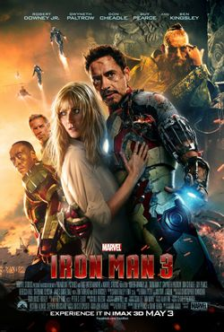
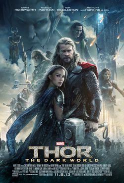
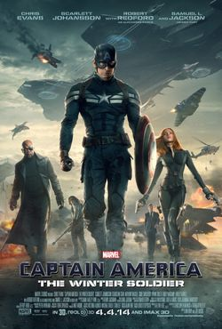
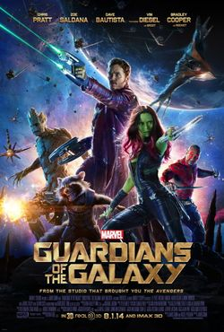
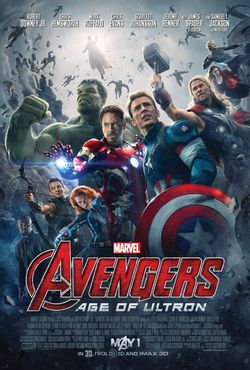
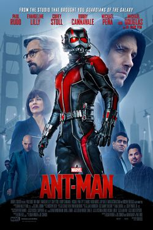
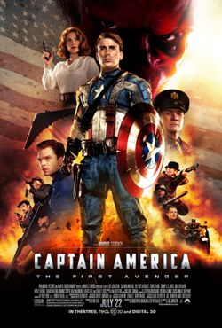
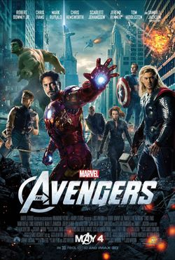

마블 시네마틱 유니버스
페이즈 2
-






마블 시네마틱 유니버스 (MCU)의 페이즈 2 (Marvel Cinematic Universe: Phase Two)는 미국의 마블 스튜디오에서 마블 코믹스 작품들을 원작으로 삼아 제작한 슈퍼히어로 영화 시리즈이다. 2013년 영화 《아이언맨 3》으로 시작해서 2015년 영화 《앤트맨》까지 총 6편의 작품으로 구성되어 있다. 이 중에는 각 영화를 크로스오버하는 '어벤져스' 시리즈의 두번째 작품, 《어벤져스: 에이지 오브 울트론》 (2015)도 포함되어 있다. 페이즈 2의 프로듀서는 모두 케빈 파이기가 맡았다. 여섯 편의 전세계 박스오피스 흥행기록을 모두 합치면 52억 달러가 넘으며, 평론계와 일반 관객으로부터 대체로 긍정적인 평가를 받았다.
페이즈 2에서 가장 많이 출연한 배우는 크리스 에번스 (캡틴 아메리카 역)으로, 카메오 출연까지 합치면 총 4편에 걸쳐 등장했다. 마블 스튜디오는 본 영화 외에도 MCU 세계관 확대를 위해 마블 원 샷 프로젝트를 기획하여 두 편의 단편영화를 제작하였고, 각각의 영화로부터 스토리가 연계되는 코믹북 시리즈도 출판하였다. <아이언맨 3>, <토르: 다크 월드>, <캡틴 아메리카: 윈터 솔져>의 경우 비디오 게임으로도 나왔으며 마블 시리즈 영화의 스토리를 각색한 게임인 〈레고 마블 어벤저스〉도 발매되었다. 페이즈 2는 페이즈 1, 페이즈 3와 함께 '인피니티 사가'를 이룬다.
영화 관람 순서 & 간략 스토리
아이언 맨 3(2013)
-
평점 :
 4.2
4.2
<어벤져스> 뉴욕 사건의 트라우마로 인해 영웅으로서의 삶에 회의를 느끼는 토니 스타크(로버트 다우니 주니어). 그가 혼란을 겪는 사이 최악의 테러리스트 만다린(벤 킹슬리)을 내세운 익스트리미스 집단 AIM이 스타크 저택에 공격을 퍼붓는다. 이 공격으로 그에게 남은 건 망가진 수트 한 벌 뿐. 모든 것을 잃어버린 그는 다시 테러의 위험으로부터 세계와 사랑하는 여인(기네스 팰트로)을 지켜내야 하는 동시에 머릿속을 떠나지 않던 한가지 물음의 해답도 찾아야만 한다.
토르: 다크 월드 (2013)
-
평점 :
 3.7
3.7
'어벤져스'의 뉴욕 사건 후, 다시 신들의 고향인 아스가르드 왕국으로 돌아간 토르(크리스 헴스워스)와 로키(톰 히들스턴). 지구를 위협한 로키는 지하 감옥에 갇히고, 토르는 아버지 오딘(안소니 홉킨스)과 함께 우주의 질서를 재정립하기 위해 나선다. 1년 후, 지구에 혼자 남은 제인(나탈리 포트만)은 우연히 태초부터 존재해왔던 어둠의 종족 ‘다크 엘프’의 무기 ‘에테르’를 얻게 된다. 이 사실을 안 ‘다크 엘프’의 리더 ‘말레키스’는 ‘에테르’를 되찾기 위해 제인과 아스가르드를 공격하고, 토르는 사랑하는 여인 제인과 아스가르드 왕국을 지키기 위해 로키에게 위험한 동맹을 제안하게 된다.
캡틴 아메리카: 윈터 솔져(2014)
-
평점 :
4.0
어벤져스의 뉴욕 사건 이후 현대 생활에 적응해 나가며 쉴드의 멤버로 일하게 된 캡틴 아메리카 '스티브'(크리스 에반스). 하지만 한 구출 작전을 수행한 이후 그는 쉴드가 무언가를 숨기고 있다고 의심하게 된다. 쉴드의 수장 '닉 퓨리'(사무엘 L. 잭슨)는 베일에 싸인 '윈터 솔져'(세바스찬 스탠)의 공격을 받고, 숨을 거두기 전 스티브에게 쉴드가 적 하이드라에게 넘어갔다고 알린다. 곧 스티브는 배신자로 낙인 찍힌 닉 퓨리와 내통했다는 명목으로 쉴드로부터 쫓기게 되고 '블랙 위도우'(스칼렛 요한슨), 새로운 동료 '샘 윌슨'(안소니 마키)과 함께 쉴드를 둘러싼 거대한 음모를 밝혀내기 위해 고군분투한다. 그리고 마침내, 그들을 저지하게 위해 나타난 하이드라의 살인 병기 윈터 솔져를 마주하게 된다.
가디언즈 오브 갤럭시 (2014)
-
평점 :
4.0
자칭 전설의 무법자 스타로드, 하지만 현실은 우주를 떠도는 그저그런 좀도둑에 불과한 '피터 퀼'(크리스 프랫). 뜻하지 않게 갤럭시의 절대악 타노스와 로난의 타겟이 된 그는 감옥에서 만난 암살자 '가모라'(조 샐다나), 거구의 파이터 '드랙스'(데이브 바티스타), 현상금 사냥꾼 '로켓'(브래들리 쿠퍼)과 '그루트'(빈 디젤) 콤비와 불편한 동맹을 맺고 ‘가디언즈 오브 갤럭시’를 결성한다. 범상치 않은 화려한 과거를 지닌 이들이 과연 120억 명의 운명을 구할 유일한 희망이 될 수 있을까
-

어벤져스: 에이지 오브 울트론 (2015)
-
평점 :
3.8
토니 스타크는 한때 가동하려다 중단된 휴면 상태의 평화 유지 프로그램을 작동 시키려 한다. 하지만 이 프로그램은 어긋나게 되고, 어벤져스는 지구의 운명이 걸린 거대한 시험대에 오르게 된다. 이 일로 극악 무도한 울트론이 등장해 자신을 복제해 위협을 가하자 이를 저지하기 위해 아이언맨, 캡틴 아메리카, 토르, 헐크, 블랙위도우, 호크아이 등으로 구성된 어벤져스와 새로 합류하게 되는 퀵 실버, 스칼렛 위치 남매와 불안한 동맹을 맺는다. 이들은 울트론의 음모를 막기위해 고군분투하며 범 지구적 모험을 하게된다.
-

앤트맨 (2015)
-
평점 :
3.9
하나뿐인 딸에게 멋진 아빠이고 싶지만, 현실은 생계형 도둑인 '스콧 랭'(폴 러드). 어느 날 그에게 몸을 자유자재로 늘리거나 줄일 수 있는 핌 입자를 개발한 과학자 '행크 핌'(마이클 더글라스)이 찾아와 수트와 헬멧을 건네며 ‘앤트맨’이 되어 줄 것을 요청한다. 어리둥절 하지만 일단 한번 해보기로 결심한 스콧 랭은 행크 핌의 딸인 '호프'(에반젤린 릴리)의 도움을 받아 점차 히어로의 면모를 갖추어가고, 그의 스승이자 멘토인 행크 핌 박사를 도와 핌 입자를 악용하려는 세력을 막아야 한다.